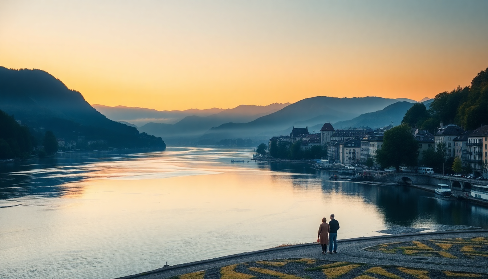

Best Day Trips from Zurich: Lucerne, Rhine Falls & Stein am Rhein

I spent a week based in Zurich last fall, and while the city itself is clean and efficient, the real payoff is using it as a launchpad. Three day trips — Lucerne, Rhine Falls, and Stein am Rhein — each felt like a different country. Here’s what actually worked, what didn’t, and how to avoid wasting time on the wrong train.
Why base yourself in Zurich for day trips?
Zurich’s main train station (Zurich HB) is a hub. You can be in a medieval town or at Europe’s biggest waterfall within an hour. The Swiss Rail system runs like a metronome — if your SBB app says 08:47 departure, it leaves at 08:47. We stayed at the Hotel Schweizerhof Zurich right across from the station, which meant we could roll out of bed and onto a platform in under ten minutes. That proximity mattered more than a fancy lobby.
- Zurich HB connects to every major line: IC, IR, and S-Bahn.
- Swiss Travel Pass covers trains, boats, and entry to many sights — we bought the 3-day pass for CHF 210 and it paid for itself by day two.
- Avoid the ZVV day pass for these trips — it only covers the canton, not Lucerne or Schaffhausen.
Is Lucerne worth the hype?
Yes, but only if you get there early. Lucerne is the most popular day trip from Zurich, and by 11 AM the Chapel Bridge (Kapellbrücke) is shoulder-to-shoulder with selfie sticks. We caught the 07:52 IC from Zurich HB, arrived at Lucerne station by 08:45, and had the bridge almost to ourselves. The painted panels inside the bridge are worth a slow walk — they tell Swiss history in wood, and most people rush past them.
- Walk the Musegg Wall — the nine towers are free to climb, and the view over the old town beats the crowded Lion Monument.
- Lunch at Bräuhaus on the river — their rösti with bacon is CHF 22 and actually filling, not a tourist portion.
- Skip the Swiss Transport Museum unless you’re traveling with kids who love trains. It’s CHF 32 and eats three hours.
- Take the Vierwaldstättersee boat from Lucerne station back to Zurich instead of the train — it’s 2.5 hours but passes through Weggis and Vitznau, and your Swiss Travel Pass covers it.
How do you visit Rhine Falls without the crowds?
Rhine Falls is the largest waterfall in Europe by volume, but the main viewing platform at Schloss Laufen is a zoo by 10 AM. I’d read the reviews calling it a tourist trap and almost skipped it. I’m glad I didn’t — the trick is to go in the late afternoon. We arrived at Neuhausen am Rheinfall station at 3 PM, walked five minutes to the ticket booth, and had the upper walkways nearly empty.
- Schloss Laufen entry is CHF 5 — worth it for the platform that spits you right over the falls. You’ll get mist in your face.
- The boat ride to the central rock (CHF 12) is a solid 20 minutes. It’s not life-changing, but you’ll feel the power of the water.
- Skip the Historic Museum inside the castle — it’s a few dusty rooms and a 10-minute filler.
- After the falls, walk 15 minutes into Schaffhausen old town. The Munot fortress is free, and the view over the Rhine at sunset is better than any paid viewpoint.
What makes Stein am Rhein a better bet than most medieval towns?
Stein am Rhein is often called the “medieval gem” of Switzerland, and for once the marketing isn’t wrong. The Oberstadt (main street) is lined with painted façades that look like a film set — but real people live above the shops. We came here on a Saturday afternoon and found it lively without being packed. The town sits on the Rhine, and the riverfront promenade is perfect for a quiet beer after the crowds in Lucerne.
- The Kloster St. Georgen (monastery) is CHF 6 and lets you walk through a 16th-century Benedictine cloister. Quiet, cool, and genuinely old.
- Eat at Rheinfels — their Züri-Geschnetzeltes (veal in mushroom cream sauce) is CHF 28 and comes with real rosti, not frozen shreds.
- Walk the Rhine promenade from the town center to the Werd island — it’s a 20-minute stroll past wooden houses and garden plots.
- Combine Stein am Rhein with Rhine Falls in one day — they’re 20 minutes apart by train, and both are small enough to do in half a day each.
Can you combine two trips in one day?
Yes, but don’t try to do all three. We did Rhine Falls and Stein am Rhein in one day and it felt comfortable. The route: Zurich HB → Neuhausen am Rheinfall (1 hour) → walk to falls → train to Stein am Rhein (10 minutes) → stroll and dinner → train back to Zurich (50 minutes). That’s a full 8-hour day with time for photos and a sit-down lunch.
- Use the SBB app for real-time platform changes — Swiss trains switch tracks last-minute.
- Pack a rain jacket for Rhine Falls — the mist soaks you even on the upper platform.
- Avoid Sunday for Stein am Rhein — most shops and the monastery close by 4 PM.
What’s the best way to get between Zurich and these places?
Trains are the only sensible option. Driving means parking fees (CHF 15–25 per lot) and traffic around Lucerne’s old town. The IC1 line from Zurich HB to Lucerne runs every 30 minutes and takes 45 minutes. For Rhine Falls, the S-Bahn S16 or IC4 to Neuhausen am Rheinfall takes 55 minutes. Stein am Rhein is on the S29 line from Schaffhausen.
- First-class on Swiss trains is CHF 10–15 more per ride and gives you quieter carriages with power outlets — worth it for the Lucerne leg.
- The Swiss Travel Pass includes the Golden Pass route from Lucerne to Interlaken, but that’s a full-day trip, not a day trip.
- Buy tickets on SBB.ch or at the station machines — no need to book ahead for these short hops.
FAQ
What is the best time of year for these day trips? Late spring (May–June) and early autumn (September–October). Summer crowds at Lucerne and Rhine Falls are brutal — we saw queue times of 30 minutes for the Schloss Laufen platform in August. Winter is quiet but the falls freeze partially and Stein am Rhein’s outdoor cafés close.
How much money should I budget for a day trip from Zurich? CHF 60–100 per person if you have a Swiss Travel Pass (covers trains and entry fees). Without the pass, budget CHF 80–120 for train tickets alone. Lunch runs CHF 20–30, and a beer at a riverfront spot is CHF 7–9. Bring cash — some smaller restaurants in Stein am Rhein don’t take cards.
Are these trips doable with kids? Yes, but choose Rhine Falls over Lucerne if you have young children. The boat ride and the spray platforms keep kids engaged. Lucerne’s old town is mostly walking and looking at buildings — our friends with a 4-year-old said they lasted 90 minutes before the whining started.
Conclusion
- Lucerne is worth the early start — arrive before 9 AM to beat the crowds at Chapel Bridge and Musegg Wall.
- Rhine Falls is better in late afternoon — skip the museum, take the boat, and finish with Schaffhausen’s Munot.
- Stein am Rhein is the sleeper hit — combine it with the falls for a full day of medieval streets and river views.
- Train logistics are simple: use the SBB app, buy a Swiss Travel Pass if you’re doing two or more trips, and always check platform numbers.
- Skip the tourist-trap restaurants on Lucerne’s main square — walk two blocks inland for better food and half the price.